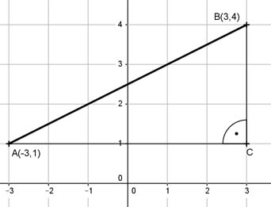

Pythagoras Aufgabe 25 Berechnen Sie die Länge der Strecke AB in cm.  AC = |-3| cm + 3 cm = 6 cm CB = 4cm - 1 cm = 3 cm Satz von Pythagoras im Dreieck ACB: AB² = AC² + CB² AB² = 6² cm² + 5² cm² = 45 cm² |√ AB = 45 cm² = 6,7 cm